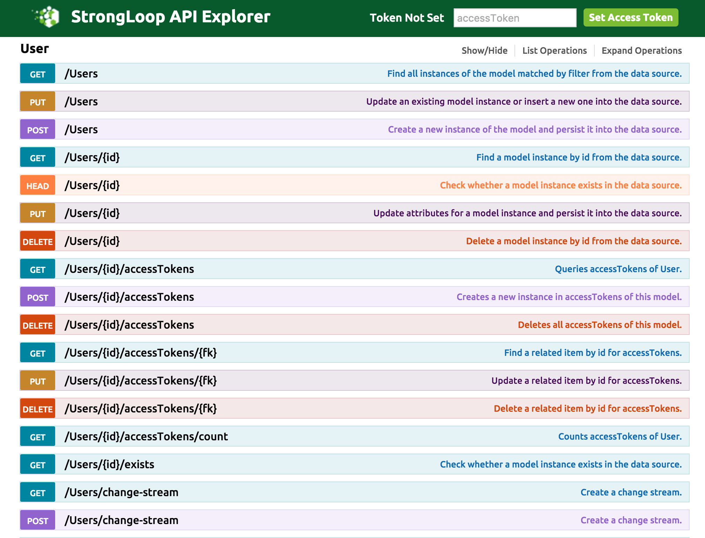
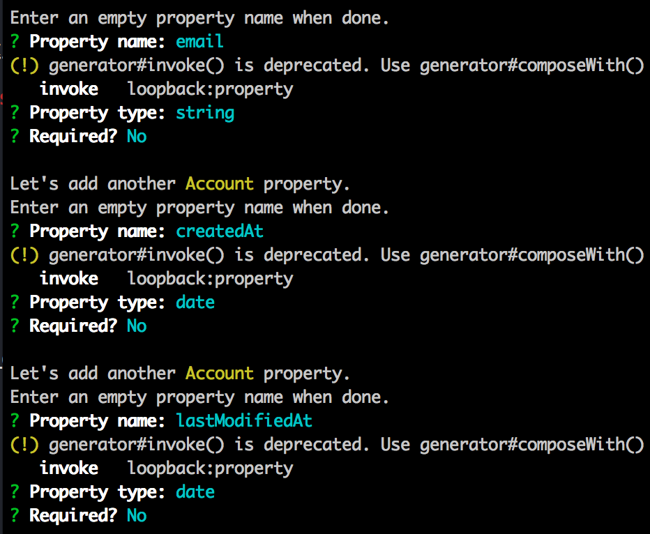
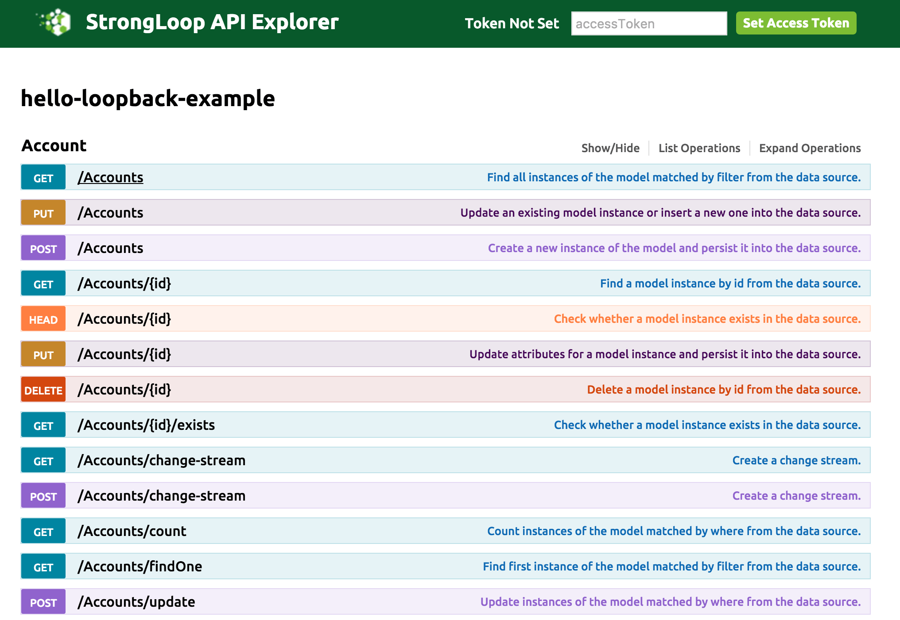

关于StrongLoop
StrongLoop 是 IBM的一家子公司，StrongLoop API Platform构建于开源的LoopBack.io之上，LoopBack是一个高度可扩展的Node.js API框架。借助于LoopBack，我们可以快速创建可扩展的API和数据库映射。
StrongLoop能与很多当前主流数据库集成使用，如Mongodb、Mysql等。
下面介绍的内容采用Mysql数据库作为示例，若使用其他数据库可对应修改
安装StrongLoop
在安装StrongLoop之前，请确保已经安装好：
- Node
- Xcode Commond Line Tools
在上面环境搭建好的情况下执行下面命令安装StrongLoop：npm install -g strongloop
安装成功之后可以查看当前安装StrongLoop的版本：slc -v
创建LoopBack应用程序
执行下面命令会在当前目录下面创建一个名为loopback-demo的应用程序：slc loopback loopback-demo
紧接着输入程序名称和安装目录，完成程序的初始化。
运行LoopBack
在上面创建的LoopBack应用程序根目录下面执行下面命令启动应用程序：slc run
在浏览器打开http://127.0.0.1:3000/explorer/，若能看到下面截图表示成功。

安装StrongLoop Mysql 连接器
在应用程序根目录下执行下面命令安装Mysql连接器，如想用其他数据库，只需要修改mysql关键词。npm i --save loopback-connector-mysql
配置数据源
在上面已经添加了Mysql数据库支持，现在要为数据库配置数据源，下面命令创建名为“AccountDb”的新数据源：slc loopback:datasource AccountDb
接受默认数据源名称，数据库类型这里选择Mysql。
在应用程序目录打开server/datasources.json文件，添加Mysql数据库的配置信息，示例如下：{
"db": {
"name": "db",
"connector": "memory"
},
"AccountDb": {
"host": "localhost",
"port": 3306,
"database": "strongloop_demo",
"username": "root",
"password": "",
"name": "AccountDb",
"connector": "mysql"
}
}
创建数据模型
下面命令为Account对象创建一个模型slc loopback:model Account
按照提示一步步选择，对于模型的”base class”，使用”PersistedModel”并选择通过REST API公开该模型。

对于数据模型上的属性，创建以下3个属性：

添加脚本来创建数据库中的模式
在项目根目录下的server文件夹创建一个bin目录，并且创建一个名为automigrate.js的文件，内容如下：var app = require('../server');
var accounts = [
{
email:'foo@bar.com',
createdAt: new Date(),
lastModifiedAt: new Date()
},
{
email:'baz@qux.com',
createdAt: new Date(),
lastModifiedAt: new Date()
}
];
// this loads the accountDb configuration in ~/server/datasources.json
var dataSource = app.dataSources.AccountDb;
// this automigrates the Account model
dataSource.automigrate('Account', function(err) {
if (err) throw err;
// this loads the Account model from ~/common/models/Account.json
var Account = app.models.Account;
var count = accounts.length;
accounts.forEach(function(account) {
// insert new records into the Account table
Account.create(account, function(err, record) {
if (err) return console.log(err);
console.log('Record created:', record);
count--;
if (count === 0) {
console.log('done');
dataSource.disconnect();
}
});
});
});
创建Mysql模式
在项目根目录下执行下面命令行运行刚才创建的autograte.js脚本在Mysql创建一个表node server/bin/automigrate.js
再次运行应用程序
再次执行下面命令就可以看到我们上面创建的表slc run

使用资源管理器页面测试API
在http://127.0.0.1:3000/explorer/我们可以直接对API进行测试，单击”POST/Accounts“链接插入新数据。输入一条JSON记录并按下”Try it Out“即可看到插入的结果！
更多关于StrongLoop
详见官方文档，打不开请自行翻墙！